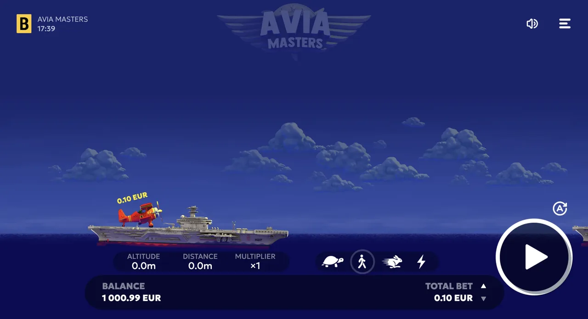

Where can I play the Tower Rush demo?
The Tower Rush demo is offered by licensed casinos that carry Galaxsys games, usually as a play-for-fun or demo toggle on the game screen.
Tower Rush
Try the real Tower Rush game free in demo mode — no deposit, no download, no account.
18+ only · Real-money gambling
The Tower Rush demo is a free, play-for-fun version of the Galaxsys crash game that uses virtual credits. It lets you practise when to cash out before the tower crashes, with no money at risk. This page explains where to find the demo and what it can and cannot do.
Load Tower Rush at a licensed operator that offers Galaxsys games and switch to demo or play-for-fun mode. Set a virtual stake, start the round, and watch the tower build as the multiplier climbs. Press cash out before it crashes. Repeat a few rounds to get a feel for how fast the multiplier moves.
Aviamasters runs at an RTP of 97%, which leaves a 3% house edge. RTP is a long-run average measured across millions of rounds, not a promise for your session, so short runs can swing well above or below it. Every round is independent and random; nothing that happened before changes the next result.
Aviamasters lets you manage risk before and during a round. Cashing out early at low multipliers is steadier: smaller wins, more of them. Holding for higher multipliers is riskier: bigger potential payouts, but the round ends first far more often. Many versions also let you set an auto-cash-out at a chosen multiplier and place two bets at once. The demo is the place to feel the difference before any real money is involved. There's no 'best' setting; it depends on how much risk you want.
The 97% RTP is the same whichever style you pick — how you play changes volatility, not expected value. Aviamasters is a low-volatility game capped at a x250 multiplier (max win €250,000); Aviamasters 2 keeps the same RTP but raises the ceiling to x1000.
The gameplay is identical, but the stakes are not. In the demo, wins and losses are virtual and reset when you reload. In real play at a licensed operator, you can win real money but can also lose your stake, and outcomes remain random. Moving from demo to real play does not change the odds.

When you've got the timing down, you can play Aviamasters for real at a licensed operator. Compare bonuses, payout speeds and supported regions on our Aviamasters casinos page. Set a budget first, and treat any session as entertainment. 18+.
If you're not sure when to cash out or how the multiplier works, start with our short how to play Aviamasters guide, then come back and practise here for free.
The Tower Rush demo is offered by licensed casinos that carry Galaxsys games, usually as a play-for-fun or demo toggle on the game screen.
No. The demo uses virtual credits so you can practise the cash-out timing. It cannot deposit, withdraw, or pay real winnings. Only real-money play at a licensed operator can pay out.
The gameplay is identical: same tower, same rising multiplier, same cash-out mechanic. The only difference is that the demo uses fake credits, so wins and losses are not real.
The free demo is the legitimate way to play Tower Rush online without depositing. Avoid unofficial 'unblocked' clones, as they may not be the real Galaxsys game and can carry security risks.
18+ only. Tower Rush is a real-money gambling game where you can lose money. Gambling is not a way to make income and outcomes are random. If gambling stops being fun, take a break or seek help: BeGambleAware.org, GamCare (0808 8020 133), or 1-800-GAMBLER (US). Set deposit and time limits before you play.
We may earn a commission if you sign up through links on this page, at no extra cost to you. It never affects our rankings or verdicts.